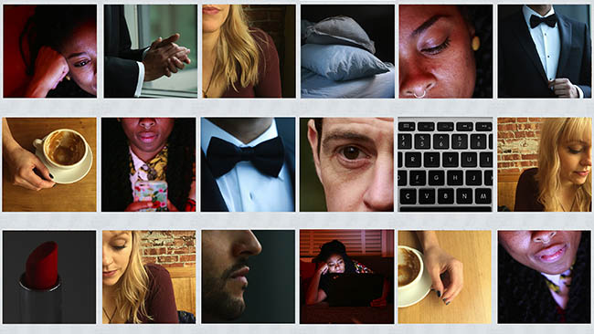

Does online dating feel like work?
Looking for love is no longer the product of kismet or boozy nights out, but ruthless, analytical searches for perfection. Digital daters discuss how they navigate the uncharted waters of online dating.
In today's romantic tradition, swipe left or right to create your online-dating video playlist. You can also click the thumbnails underneath to watch individual clips in any order, or view outtakes from the interviews.
<%= t.include("_tenderContainer.html") %>Outtakes and extras
In these videos
<% csv.profiles.forEach(function(row) { %>
 <% }) %>
<% }) %>
<%= row.name %>, <%= row.age %>
- On <%= row.uses %>
- Dates <%= row.dates %>
- Looking for <%= row.looking_for %>
- Hobbies <%= row.hobbies %>
Renessa Rios-Strong, 34
- Occupation Author, matchmaker and dating expert at MatchDateLove.com

In Pacific NW Magazine
Looking for love: These days it's a data-driven quest for perfection. Read the full story
- Photo and video: Erika Schultz
- Video and editing: Corinne Chin
- Interactive development: Thomas Wilburn
- Music from: Podington Bear, Kevin MacLeod, Audionautix, Blue Dot Sessions